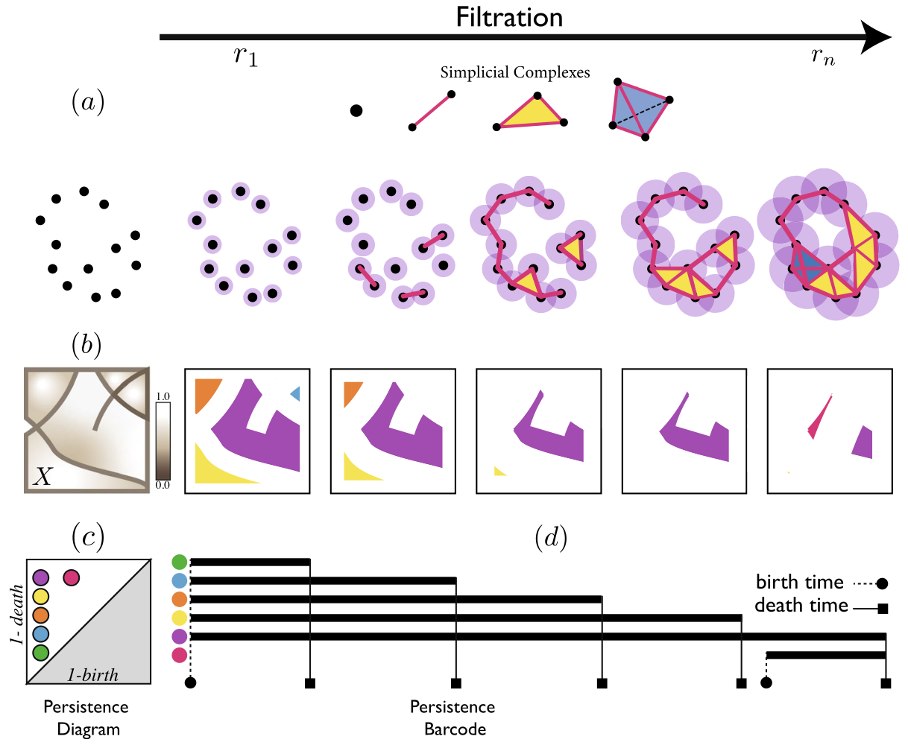

News
- 07/2024 We have one paper accepted to the European Conference on Computer Vision (ECCV 2024).
- 02/2024 We have two papers accepted to the IEEE / CVF Computer Vision and Pattern Recognition Conference (CVPR 2024).
- 01/2024 One paper accepted to the Artificial Intelligence Review (Springer).
- 10/2023 One paper accepted to the Machine Learning and the Physical Sciences Workshop at the NeurIPS (NeurIPS ML4PS 2023).
- 07/2023 One main paper and a workshop paperaccepted to the International Conference on Computer Vision (ICCV 2023).
Selected Publications (All Publications)

|
Canonical Shape Projection is All You Need for 3D Few-shot Class Incremental LearningAuthors: Ali Cheraghian, Zeeshan Hayder, Sameeea Ramasinghe, Shafin Rahman, Javad Jafaryahya, Lars Petersson, Mehrtash Harandi Venue: European Conference on Computer Vision (ECCV) 2024 |
|
|
DSGG: Dense Relation Transformer for an End-to-end Scene Graph GenerationAuthors: Zeeshan Hayder, Xuming He Venue: IEEE/CVF Conference on Computer Vision and Pattern Recognition (CVPR) 2024 |
|
|
Backpropagation-free Network for 3D Test-time AdaptationAuthors: Yanshuo Wang, Ali Cheraghian, Zeeshan Hayder, Jie Hong, Sameera Ramasinghe, Shafin Rahman, David Ahmedt-Aristizabal, Xuesong Li, Lars Petersson, Mehrtash Harandi Venue: IEEE/CVF Conference on Computer Vision and Pattern Recognition (CVPR) 2024 |
{kind=link}
|

|
Topological deep learning: a review of an emerging paradigmAuthors: Ali Zia, Abdelwahed Khamis, James Nichols, Usman Bashir Tayab, Zeeshan Hayder, Vivien Rolland, Eric Stone, Lars Petersson Venue: Artificial Intelligence Review, Springer 2024 |
|
|
Hyperbolic Audio-visual Zero-shot LearningAuthors: Jie Hong, Zeeshan Hayder, Junlin Han, Pengfei Fang, Mehrtash Harandi, Lars Petersson Venue: IEEE/CVF International Conference on Computer Vision (ICCV) 2023 |
|
|
Diff3DHPE: A Diffusion Model for 3D Human Pose EstimationAuthors: Jieming Zhou, Tong Zhang, Zeeshan Hayder, Lars Petersson, Mehrtash Harandi Venue: IEEE/CVF International Conference on Computer Vision R6D Workshop (ICCVW) 2023 |